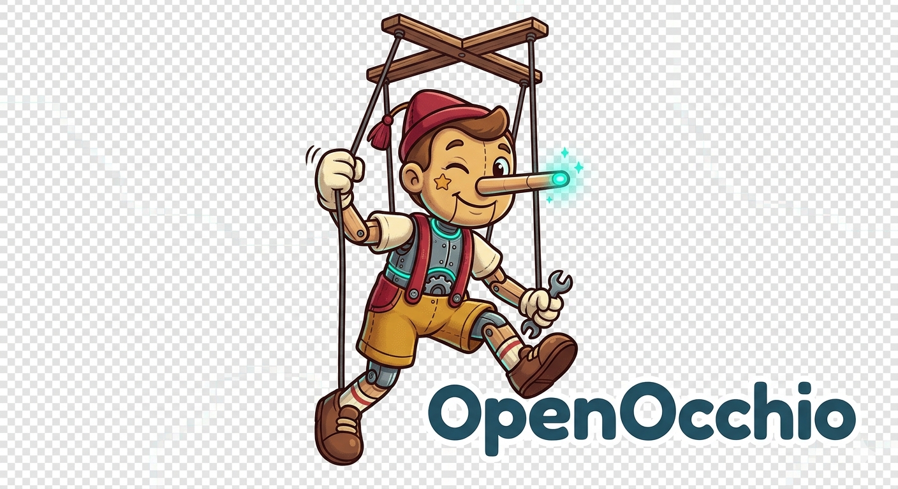

⚙️
OpenOcchio
AI Truth & Confidence Meter
Ask AI
Verify Text
Check Confidence
Enter a prompt above to see AI confidence score.
Recent Checks
Settings
Backend URL
Custom API Key (Optional)
Used if the backend supports pass-through auth.
Enable Demo Mode Fallback
Save & Close